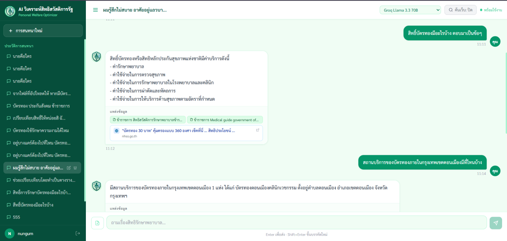
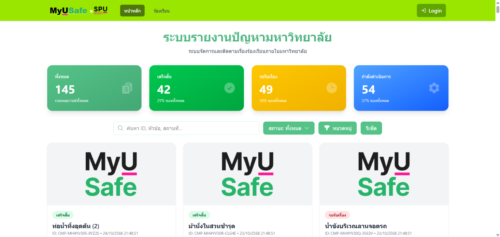
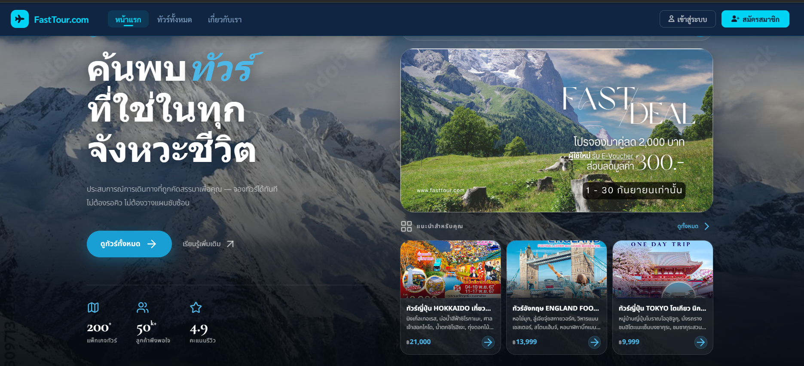

Computer Science student focused on Full-Stack Development & AI
ฉัน ญาณิศา อินทรวิชา นักศึกษาวิทยาการคอมพิวเตอร์ ชั้นปีที่ 4 สนใจด้าน Full-Stack Development และ AI กำลังมองหาโอกาสสหกิจศึกษา / Junior Developer เพื่อพัฒนาทักษะจากการทำงานจริง
// about me
กำลังศึกษาอยู่ชั้นปีที่ 4 คณะเทคโนโลยีสารสนเทศ สาขาวิทยาการคอมพิวเตอร์และพัฒนาซอฟต์แวร์ มหาวิทยาลัยศรีปทุม · GPA 3.05
มีประสบการณ์พัฒนาโปรเจกต์ทั้ง Web Application, Backend และ AI/RAG ตั้งแต่การออกแบบระบบไปจนถึงการ Deploy ใช้งานจริง
Tech Stack ที่ใช้งาน ได้แก่ React, Node.js, ASP.NET MVC, C#, JavaScript, Python, MySQL, MongoDB, SQLite และ Docker
AI · RAG · HEALTHCARE
AI Assistant for Healthcare & Welfare Information

PROBLEM
ข้อมูลสิทธิด้านสุขภาพและสวัสดิการมีรายละเอียดจำนวนมาก ทำให้ผู้ใช้งาน โดยเฉพาะผู้สูงอายุ เข้าถึงและทำความเข้าใจข้อมูลได้ยาก
SOLUTION
พัฒนา AI Assistant ด้วย Retrieval-Augmented Generation (RAG) เพื่อค้นหาและตอบคำถามจากข้อมูลสิทธิและสวัสดิการที่เกี่ยวข้อง
MY ROLE
ออกแบบระบบ RAG จัดการข้อมูลและฐานข้อมูล รวมถึงพัฒนาและเชื่อมต่อส่วนต่างๆ ของระบบ AI
TECH
Python · RAG · Sentence Transformers · ChromaDB · React
AI PIPELINE
Document → Embedding → Vector Database → Retrieval → AI Response
GOAL
ช่วยให้ผู้ใช้งานค้นหาและทำความเข้าใจข้อมูลด้านสุขภาพและสิทธิประโยชน์ได้ง่ายขึ้นผ่าน AI

Full-Stack
ระบบรับเรื่องร้องเรียนออนไลน์สำหรับจัดการข้อมูลและติดตามสถานะคำร้อง พร้อม Backend และฐานข้อมูลสำหรับจัดการข้อมูลผู้ใช้งาน

Web Application
ระบบจองทัวร์ออนไลน์ พัฒนาด้วย ASP.NET MVC พร้อมระบบจัดการข้อมูลและการจองผ่านฐานข้อมูล
หน้าเว็บหน้าเดียวที่ออกแบบให้คนดู Portfolio อ่านจบและเข้าใจตัวคุณได้อย่างรวดเร็ว เน้นให้ข้อมูลสำคัญขึ้นก่อน อ่านง่ายทั้งบนมือถือและคอมพิวเตอร์
เปิดรับตำแหน่งสหกิจศึกษา / Junior Full-Stack Developer พร้อมเริ่มงานและเรียนรู้เพิ่มเติมทันที
HTML + CSS + JS (Tailwind CDN)